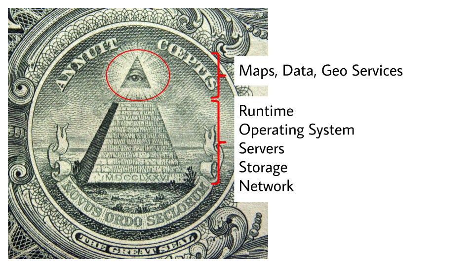
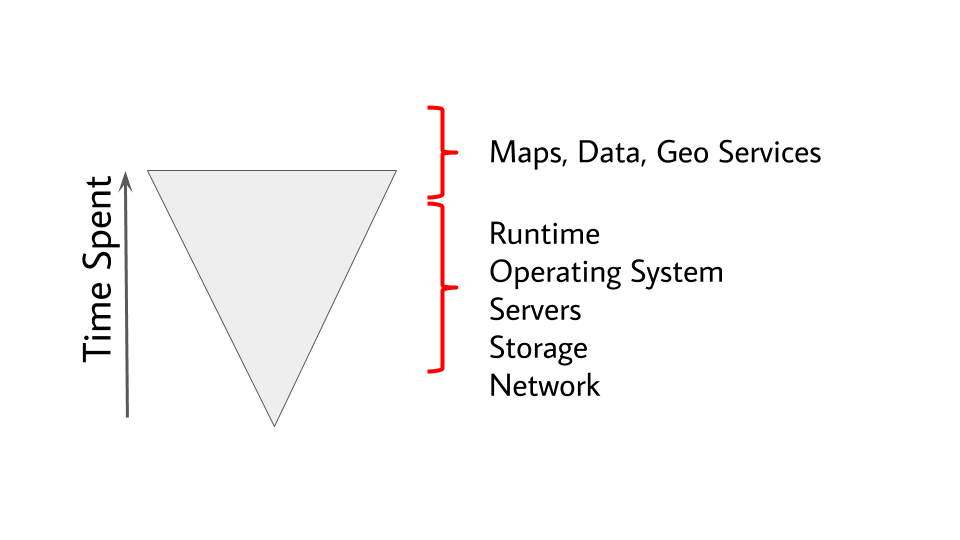
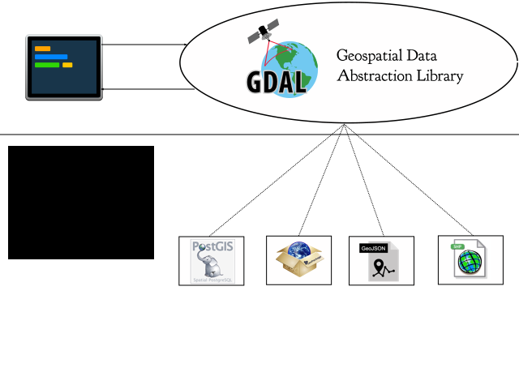
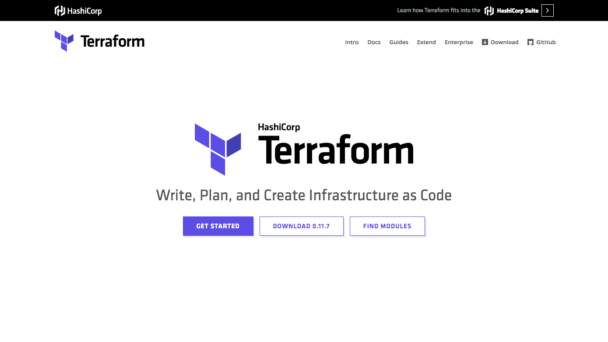
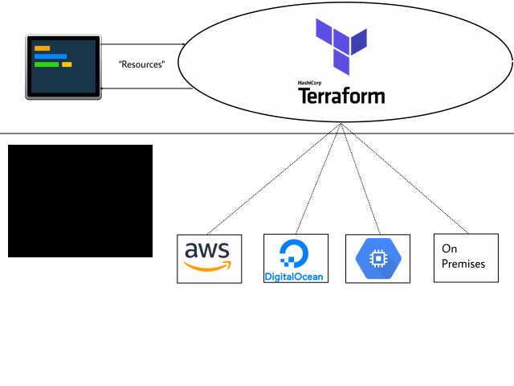
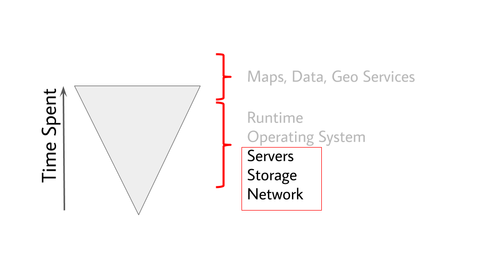
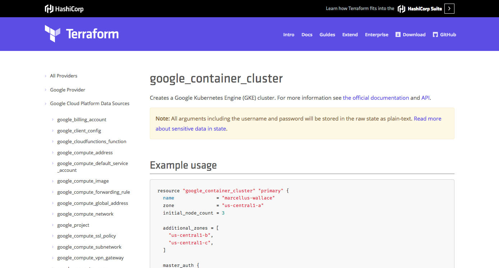
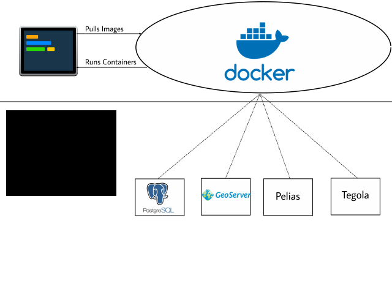
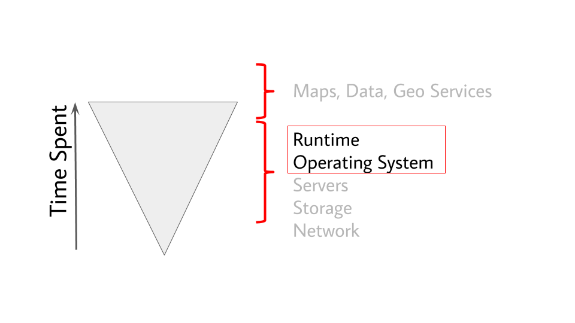

Automated Map Stacks:
Devops & Infrastructure-as-Code
@brandynfriedly
FOSS4GNA St. Louis
May 16, 2018
Operations & Maintenance
“40–90% of the total costs of a system are incurred after birth.
Goals
- What is Devops?
- Why Devops?
- Introduce Devops Toolbelt
- Benefits for FOSS4G Community
Devops
...what?
Devops Defined
“Devops is a way of thinking and a way of working. It is a framework for sharing stories and developing empathy, enabling people and teams to practice their crafts in effective and lasting ways. It is part of the cultural weave that shapes how we work and why. Many people think about devops as specific tools like Chef or Docker, but tools alone are not devops. What makes tools 'devops' is the manner of their use, not fundamental characteristics of the tools themselves.”

2013
2016
The Three Ways
- Flow
- Feedback
- Continual Learning
Flow
Our goal is to decrease the amount of time required for changes to be deployed into production and to increase the reliability and quality of those services.
Flow: Value Stream
Where is your value?
Adapted from Figure 1-1, Justin Garrison and Kris Nova, Cloud Native Infrastructure (Beijing Boston Farnham Sebastopol Tokyo: O’Reilly, 2017).
Flow: Value Stream
Where is your time spent?
Adapted from Figure 1-1, Justin Garrison and Kris Nova, Cloud Native Infrastructure (Beijing Boston Farnham Sebastopol Tokyo: O’Reilly, 2017).
Flow: Deployment Pipeline
No Pipeline

Flow: Deployment Pipeline
Some Pipeline
Flow: Deployment Pipeline
Automated Pipeline (Continuous Delivery)
Feedback
Second Way describes the principles that enable the reciprocal fast and constant feedback from right to left at all stages of the value stream. Our goal is to create an ever safer and more resilient system of work.
Feedback
Safety & Quality
- Continuous monitoring of running systems
- Continuous Integration
- Automatic testing of proposed changes to systems
Continual Learning & Experimentation
Third Way focuses on creating a culture of continual learning and experimentation. These are the principles that enable constant creation of individual knowledge, which is then turned into team and organizational knowledge.
Devops
...why?
Simplicity
“Simplicity is the ultimate sophistication.”*
“The price of reliability is the pursuit of the utmost simplicity.”
Where does complexity come from?
State
State
Devops
...how?
Abstraction
Tools simplify by creating useful abstractions
Terraform
Terraform abstracts infrastructure & cloud providers
Terraform's Place in Value Stream
Adapted from Figure 1-1, Justin Garrison and Kris Nova, Cloud Native Infrastructure (Beijing Boston Farnham Sebastopol Tokyo: O’Reilly, 2017).
Example: Create a Kubernetes Cluster on Google Compute Engine
Docker
“Docker provides what is called an abstraction. Abstractions allow you to work with complicated things in simplified terms. So, in the case of Docker, instead of focusing on all of the complexities and specifics associated with installing an application, all we need consider is what software we’d like to install.”
Containers abstract software & applications
Docker's Place in Value Stream
Adapted from Figure 1-1, Justin Garrison and Kris Nova, Cloud Native Infrastructure (Beijing Boston Farnham Sebastopol Tokyo: O’Reilly, 2017).
Kubernetes
“...is an open-source system for automating deployment, scaling, and management of containerized applications.”
Kubernetes as container orchestrator

Built to scale up or down
Equally beautiful
Not predictable
Not a sustainable model for systems operations and maintenance
Devops
...4 FOSS4G?
Open Source Software
- The What (development): the software itself (PostGIS, GeoServer, Pelias, Tegola, etc.)
- The How (operations): the process of creating, operating, and maintaining a software/information system
- The Why: the unique use cases - the value produced by mapping software